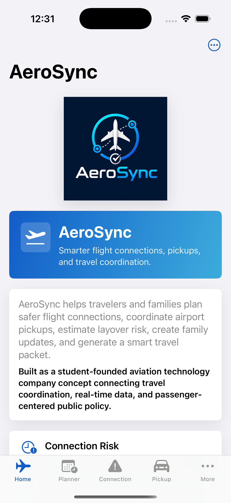

Connection Risk
Scores layovers using time, airport complexity, terminal transfers, baggage, traveler needs, and current operating conditions.
Student-founded aviation technology venture
Aviation coordination, built around people.
A native iOS app that helps travelers evaluate connections, coordinate pickups, understand current airport conditions, and communicate clearly when plans change.

The product
Air travel information is often scattered across airline apps, airport pages, weather products, family text threads, and terminal signage. AeroSync brings the planning decisions into one clear workflow.
AeroSync does not pretend to be an airline or government system. It labels sources, distinguishes live observations from planning estimates, and keeps the user focused on the next practical action.
Scores layovers using time, airport complexity, terminal transfers, baggage, traveler needs, and current operating conditions.
Builds a practical plan for when to leave, where to wait, and what family members should communicate before entering airport traffic.
Supports major global hubs, international connection buffers, optional location context, and airport map views.
Turns trip details, risk results, pickup instructions, and backup steps into a shareable travel packet.
Tracks public airline stocks in a separate research view with clearly labeled market-data timing and financial disclaimers.
Keeps the MVP lightweight with local trip preferences, saved plans, and no required AeroSync account.
Live data architecture
Official Aviation Weather Center METAR reports refresh while relevant app screens are open. No API key is required.
An authorized aviation provider can add exact flight status, estimated arrival, terminal, gate, and baggage information when available.
If an operational source is unavailable, AeroSync says so. Planning estimates are never presented as official airline status.
Aviation policy capstone
AeroSync is more than a travel utility. It is a civic-technology prototype for studying how airlines, airports, and digital tools communicate during delays, missed connections, accessibility situations, baggage waits, and curbside pickups.
Consumer tools should distinguish official status, live observations, provider estimates, and app-generated recommendations.
Disruption messages should explain the passenger’s next step, not only state that a delay or change occurred.
Timing and terminal guidance should account for mobility assistance, language clarity, family travel, and unfamiliar airports.
Ready-to-pick-up confirmation and cell phone lot guidance can reduce terminal congestion, circling, and family confusion.
“How can aviation institutions communicate disruption information in a way that is timely, trustworthy, accessible, and useful enough to change passenger behavior?”
Built natively
Founder
Founder & CEO, AeroSync
Adhvaith is a Texas Academy of Mathematics and Science student exploring the intersection of aerospace engineering, aviation systems, public policy, and civic technology. He created AeroSync to turn a passenger communication policy question into a functioning native iOS product.
“The strongest aviation systems do more than move aircraft efficiently. They help people understand what is happening and what to do next.”
Project status
AeroSync currently runs as a native iOS prototype and is being developed as a student venture and aviation policy capstone. Public distribution will require final provider licensing, privacy review, secure production authentication, and App Store review.